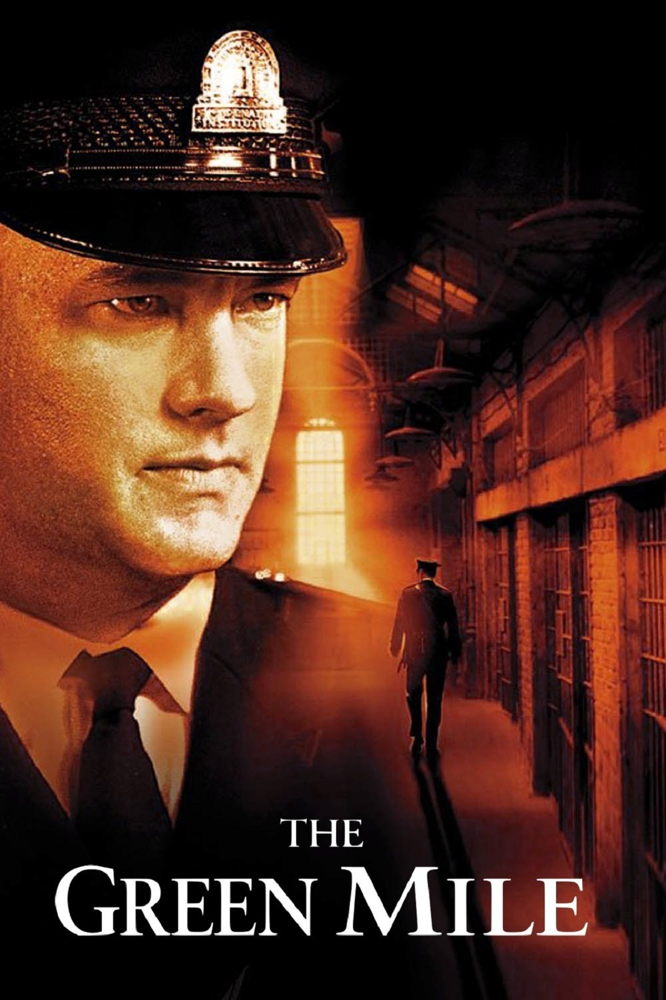

bu metinde size en iyi filmler sıralayacağız ve size bu filmerin özetlerini vereceğiz. bu sıralama ve özetler beyazperde sitesine aittir.
1.Esaretin Bedeli

Yönetmeni Frank Darabont olan bu filmin özeti bu şekildedir.
ÖZET
Esaretin Bedeli, Andy ve Red isimli iki mahkumun parmaklıklar ardında kurdukları dünyanın hikayesini anlatıyor. Andy Dufresne, genç ve başarılı bir bankerdir. Karısını ve karısının sevgilisini öldürmek suçundan yargılanır ve ömür boyu hapis cezası alır. Shawsank Hapishanesi'nde dayak, işkence, tecavüz, her türlü durum yaşanmaktadır fakat Andy gene de hayata bağlı ve iyimserdir. Bu tutumu etrafındakileri de etkiler. Andy umutlu bakış açısıyla çevresindeki tüm mahkumları, parmaklıklar arkasında bile özgür bir yaşam olabileceğine inandırır. Andy'nin bu çabalarına ortak olacak bir arkadaşı da olacaktır: Red.Bir Stephen King uyarlaması olan filmde Morgan Freeman ve Tim Robbins başrolde. Film, 1995'te, aralarında en iyi film adaylığı da olmak üzere tam 7 dalda Oscar'a aday gösterildi.
2.Yüzüklerin Efendisi: Kralın Dönüşü

Yönetmeni Peter Jackson olan bu film eminim bir çoğumuz tarafından izlenmiştir
ÖZET
Yüzüklerin Efendisi: Kralın Dönüşü, Tek Yüzük'ün yok edilmesi için verilen mücadeleyi konu ediyor. Sauron'un orduları büyüdükçe büyümektedirler. Frodo ve onun can dostu Sam, korku dolu bir yolculuğun göbeğinde, korkunç Mordor'a adım adım yaklaşmaktadırlar. Tek yüzük yok edilmelidir ve iyilik bunun için savaşmaya hazırdır. Arka planda ise insan, elf ve cüce orduları, karanlık güçlerin karşısında tüm eski düşmanlıklarına rağmen bir araya gelmişlerdir. Hepsi birden küçücük bir Hobbit'in eline ve onun yeteneklerine bakmaktadırlar. Orta Dünya'nın kaderi belli olmak üzeredir. Ancak Tek Yüzük'ü sahiplenmek, kimi zaman taşıyanına daha cazip gelebilir.
3.Yeşil Yol
Yönetmeni Frank Darabont olan bu filmin özeti bu şekildedir.
ÖZET
Yeşil Yol, bir hapishane görevlisi ile bir mahkumun öyküsünü anlatıyor. Paul Edgecomb'un hapishanedeki görevi, idama mahkum edilen mahkumları son yolculuklarına uğurlamaktır. Çalıştığı yıllar içerisinde yüzlerce mahkumu idam etmiştir. Bir gün John Coffey isimli korkutucu görünümlü bir adamla tanışır. Ancak Coffey'in bu ürkütücü görünümünün altında oldukça saf bir ruh yatmaktadır. Coffey, iki küçük kız çocuğunun katil davasında yargılanmaktadır. Coffey'in günden güne gün yüzüne çıkan dünya ötesi güçleri, karakteri hakkında yeni ipuçlarını anbean ortaya çıkaracaktır.